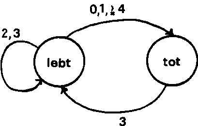

Nascom Journal |
1/80 |
Dieses Spiel wurde im Jahre 1967 von John Conway entwickelt und erfreut sich gerade unter Computeranwendern großer Beliebtheit. Hier dem Spiel steht der Gedanke, Geburt, Leben und Vergehen in einem biologischen Organismus zu simulieren. Dazu gibt Conway (siehe: M.Gardner in „Scientific American“ 223, oct.120-123(1970) und ebd. 224, feb.112-117 (1971)) einen Satz einfacher Regeln an, die sich auch in einem Diagramm darstellen lassen:

Überleben
Eine Zelle, die zwei oder drei Nachbarn hat, überlebt bis zur
nächsten Generation.
Tod
Eine Zelle mit vier oder mehr Nachbarn stirbt infolge
„Übervölkerung“,
eine Zelle mit nur einem oder keinem Nachbarn an Vereinsamung.
Geburt
Jeder leere Platz mit genau drei Nachbarn wird in der nächsten Generation mit einer Zelle besetzt.
Untenstehend wird sowohl ein Hex-Dump des Programmes als auch ein kommentiertes Assemblerlisting angegeben.
Das Programm wird bei Adresse 0C7C gestartet. Es läuft mit Nasbug T4 und dem 1k Monitorprogramm Nasbug T2.
Folgende Tastenfunktionen können genutzt werden:
Zur Eingabe des Musters, mit dem das Programm arbeiten soll:
| New Line | arbeitet wie gewohnt | |
| Shift+Backspace | arbeitet wie gewohnt | |
| SPACE | Der Cursor springt zwei Plätze vorwärts. (Um ein quadratisches Muster erstellen zu können.) | |
| Backspace | Der Cursor springt um zwei Plätze zurück. Grund wie bei „SPACE“. |
2. Zellen setzen:
Um Zellen zu setzen, wird der Buchstabe „O“ eingegeben.
3. Kommandotasten:
Die Kommandotasten werden direkt abgefragt, d.h., es muß kein Newline danach kommen.
| S | Schrittweise Ausführung |
| E | Kontinuierliche Ausführung |
| H | Halt |
Programmparameter:
Die Geschwindigkeit, mit der eine Generation in die nächste umgewandelt werden soll, kann man durch Wahl des Speicherinhaltes der Speicherzelle 0CCCh bestimmen.
Der Speicherbereich von 0D60h bis 0EB8h wird als Zwischenspeicher benötigt.
Starten Sie das Programm und geben Sie ein beliebiges Muster von „O“ ein, das das Programm entwickeln soll. Dann betätigen Sie entweder die Taste „S“ (schrittweiser Ablauf) oder „E“ (kontinuierlicher Ablauf). Wir haben bei diesem Spiel übrigends ein Spielfeld von 15 x 23 Zellen. (Annähernd quadratisch.)
Ein schönes Testbeispiel für das Programm ist der „Blinker“. Das ist eine Konfiguration, die nur zwei Zustände kennt, die dann abwechselnd auftreten:
| OOO | O O O |
LIFE ist in manchen Computerzeitschriften zu einer „Fast-Wissenschaft“ erhoben worden, zumindest aber zu einem recht geistreichen Spiel. Da gibt es „Segler“, die langsam über den Bildschirm gleiten, da gibt es Gebilde, die periodisch Segler oder „Raumschiffe“ ausstoßen und die tollsten Formen von oszillierenden Figuren. Die Möglichkeiten sind unerschöpflich. Probieren Sie’s mal aus ??
| Seite 4 von 16 |
|---|